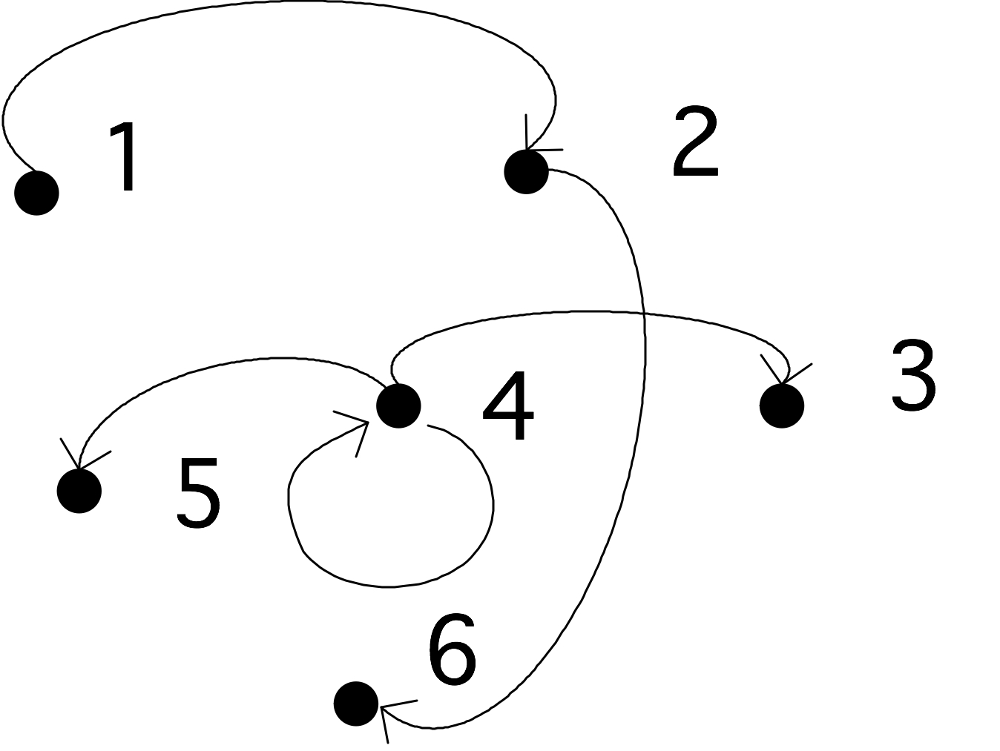
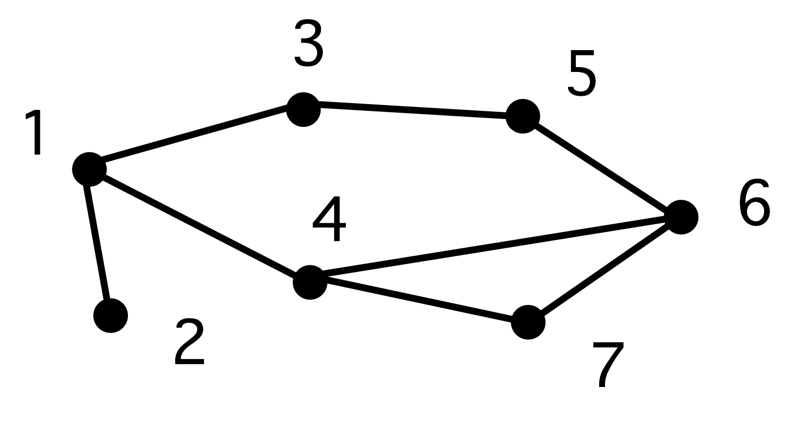
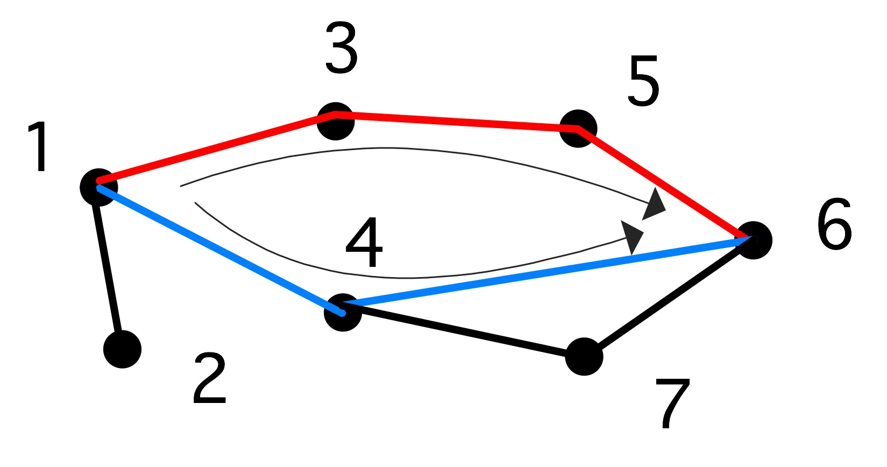
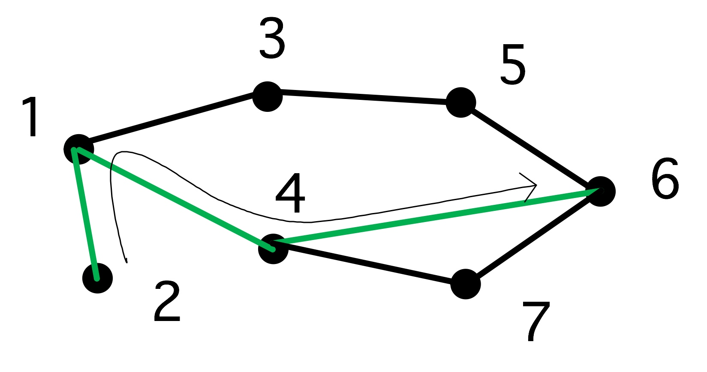
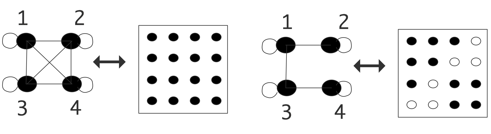

Graph theory is the branch of mathematics that studies pairwise relations between objects. Graphs both appear as tools for analyzing issues in HPC , and as objects of study themselves. This appendix introduces the basic concepts and some relevant theory.
crumb trail: > graph > Definitions
A graph consists of a set of objects, and set of relations between them. The objects, called the nodes or vertices of the graph, usually form a finite set, so we usually identify them with consecutive integers $1\ldots n$ or $0\ldots n-1$. The relation that holds between nodes is described by the edges of the graph: if $i$ and~$j$ are related, we say that $( i,j)$ is an edge of the graph. This relation does not need to be symmetric, take for instance the `less than' relation.
Formally, then, a graph is a tuple $G=\langle V,E\rangle$ where $V=\{1,\ldots n\}$ for some~$n$, and $E\subset\{(i,j)\colon 1\leq i,j\leq n,\,i\not=j\}$.
$ \begin{cases} V=\{1,2,3,4,5,6\}\\ E=\{ (1,2),(2,6),(4,3),(4,4),(4,5)\} \end{cases} $}
FIGURE 19.1: A simple graph
A graph is called an undirected graph if $(i,j)\in E\Leftrightarrow (j,i)\in E$. The alternative is a directed graph , where we indicate an edge $(i,j)$ with an arrow from $i$ to~$j$.
Two concepts that often appear in graph theory are the degree and the diameter of a graph.
The degree denotes the maximum number of nodes that are connected to any node: \[ d(G)\equiv \max_i \left|\{j\colon j\not=i\wedge (i,j)\in E\}\right|. \]The diameter of a graph is the length of the longest shortest path in the graph, where a path is defined as a set of vertices $v_1,\ldots, v_{k+1}$ such that $v_i\not=v_j$ for all $i\not=j$ and \[ \forall_{1\leq i\leq k}\colon (v_i,v_{i+1})\in E. \] The length of this path is~$k$.
The concept of diameter is illustrated in figure~ 19.2 .
A graph}  Two paths from 1 to 6; $\langle 1,4,6\rangle$ is the shorter}  The longest shortest path of this graph}
FIGURE 19.2: Shortest paths
A~path where all nodes are disjoint except for $v_1=v_{k+1}$ is called a cycle .
Sometimes we are only interested in the mere existence of an edge $(i,j)$, at other times we attach a value or `weight' $w_{ij}$ to that edge.
. Such a graph can be represented as a tuple $G=\langle V,E,W\rangle$ where $E$ and $W$ have the same cardinality.
has all weights the same value, in which case we omit mention of weights.
crumb trail: > graph > Common types of graphs
crumb trail: > graph > Common types of graphs > Directed Acyclic Graphs
A graph that does not have cycles is called an acyclic graph A special case of this type of graph is the DAG . This type of graph can for instance be used to model dependencies between tasks: if there is an edge from $i$ to~$j$, it means that task $i$ has to be done before task~$j$.
crumb trail: > graph > Common types of graphs > Trees
One special case of DAGs is the tree graph , or for short a tree : here any node can have multiple outgoing edges, but only one incoming edge. Nodes with no outgoing edges are leaf nodes ; a~node with no incoming edges is called a root, and all other nodes are called interior nodes .
Can a tree have more than one root?
crumb trail: > graph > Common types of graphs > Separable graphs
A separable graph is a graph consisting of two sets of nodes, where all connections are inside either of the sets. Such graph can obviously be processed in parallel, so several parallelization algorithms are concerned with transforming a graph to a separable one. If a graph can be written as $V=V_1+V_2+S$, where nodes in $V_1,V_2$ are only connected to $S$, but not to the other set, we call $S$ a separator .
crumb trail: > graph > Common types of graphs > Bipartite graphs
If a graph can be partitioned into two sets of nodes, where edges only run from the one set to the other, but not inside a set, we call this a bipartite graph .
crumb trail: > graph > Graph colouring and independent sets
We can assign labels to the nodes of a graph, which is equivalent to partitioning the set of nodes into disjoint subsets. One type of labeling that is of interest is graph colouring : here the labels (or `colours') are chosen so that, if nodes $i$ and $j$ have the same colour, there is no edge connecting them: $(i,j)\not\in E$.
There is a trivial colouring of a graph, where each node has its own colour. More interestingly, the minimum number of colours with which you can colour a graph is called the colour number of the graph.
Show that, if a graph has degree $d$, the colour number is at most $d+1$.A famous graph colouring problem is the `four colour theorem': if a graph depicts countries on a two-dimensional map (a so-called `planar' graph), then the colour number is at most four. In general, finding the colour number is hard (in fact, NP-hard).
The colour sets of a graph colouring are also called independent sets , since within each colour no node is connected to a node of the same colour.
There is a trivial way of finding independent sets: declare each node to have its own unique colour. On the other hand, finding the `best' division in independent sets, for instance through finding the colour number of the graph, is difficult. However, often it is enough to find a reasonable partitioning of the nodes into independent sets, for instance in constructing paralell ILU preconditioners; section 6.7.4 . The following algorithm does that [jopl94,Luby:parallel] :
crumb trail: > graph > Graph algorithms
In this section we only briefly touch on graph algorithms; a full discussion can be found in section 9.2 .
crumb trail: > graph > Graphs and matrices
A graph can be rendered in a number of ways. You could of course just list nodes and edges, but little insight can be derived that way. Simple graphs can be visualized by drawing vertices and edges, but for large graphs this becomes unwieldy. Another option is to construct the adjacency matrix of the graph. For a graph $G=\langle V,E\rangle$, the adjacency matrix $M$ (with a size $n$ equal to the number of vertices $|V|$) is defined by \[ M_{ij}= \begin{cases} 1&(i,j)\in E\\ 0&\mbox{otherwise} \end{cases} \] Conversely, if you have a matrix, especially a sparse matrix , you can construct its adjacency graph . This is illustrated in figure 19.3 for
\caption{A dense and a sparse matrix, both with their adjacency graph}
both a dense and a sparse matrix. In this example, the matrices are structurally symmetric, so we use lines instead of arrows in the graphs. There is an edge on each vertex corresponding to the diagonal element; this edge will often be left out of illustrations.
For graphs with edge weights, we set the elements of the adjacency matrix to the weights: \[ M_{ij}= \begin{cases} w_{ij}&(i,j)\in E\\ 0&\mbox{otherwise} \end{cases} \]
If a matrix has no zero elements, its adjacency graph has an edge between each pair of vertices. Such a graph is called a clique . If the graph is undirected, the adjacency matrix is symmetric, and conversely, if a matrix is structurally symmetric , its adjacency graph is undirected.
crumb trail: > graph > Graphs and matrices > Permutation
Graphs are often used to indicate relations between objects in the real world. One example would be `friend-of' relations in Facebook. In such cases, the nodes in a graph do not have a natural numbering: they are identified by a name and any numbering is artificial. Thus, we could wonder which graph properties remain invariant, and which ones change, if we apply a different numbering.
Renumbering a set of objects can be modeled algebraically by applying a permutation matrix .
A permutation matrix is a square matrix where each row and column has exactly one element equal to one; all other elements are zero.Let a set of $N$ objects $x_1,…,x_N$ be given. What is the permutation matrix that orders them as $x_1,x_3,…,x_2,x_4,…$? That is, find the matrix $P$ such that \[ \begin{pmatrix} x_1\\x_3\\\vdots\\x_2\\x_4\\\vdots \end{pmatrix} = P \begin{pmatrix} x_1\\\vdots\\x_N \end{pmatrix} \]
Show that the eigenvalues of a matrix are invariant under permutation.
crumb trail: > graph > Graphs and matrices > Irreducibility
As an example of graph concepts that has an easy interpretation in the adjacency matrix, consider reducibility.
A graph is called irreducible if for every pair $i,j$ of nodes there is a path from $i$ to $j$ and from $j$ to $i$. A graph is reducible if it is not irreducible.Let $A$ be a matrix A= \begin{pmatrix} B&C\\ \emptyset&D \end{pmatrix} \label{eq:reduct-u} \end{equation}
where $B$ and $D$ are square matrices. Prove the reducibility of the graph of which this is the adjacency matrix.
The matrix in equation eq:reduct-u is block upper triangular matrix. This means that solving a system $Ax=b$ is solved in two steps, each of size $N/2$, if $N$ is the size of $A$.
Show that this makes the arithmetic complexity of solving $Ax=b$ lower than for a general $N\times N$ matrix.If we permute a graph, its reducibility or irreducibility is not changed. However, it may now no longer be apparent from looking at the adjacency matrix.
crumb trail: > graph > Graphs and matrices > Graph closure
Here is another example of how adjacency matrices can simplify reasoning about graphs.
Let $G=\langle V,E\rangle$ be an undirected graph, and let $G'=\langle V,E'\rangle$ be the graph with the same vertices, but with vertices defined by \[ (i,j)\in E'\Leftrightarrow \exists_k\colon (i,k)\in E\wedge (k,j)\in E. \] If $M$ is the adjacency matrix of $G$, show that $M^2$ is the adjacency matrix of $G'$, where we use boolean multiplication on the elements: $1\cdot1=1$, $1+1=1$.
crumb trail: > graph > Spectral graph theory
With a graph $G$\footnote{This section owes much to Dan Spielman's course on spectral graph theory http://www.cs.yale.edu/homes/spielman/561/ .} and its adjacency matrix $A_G$, we can define a stochastic matrix or Markov matrix by scaling $A_G$ to have unit row sums: \[ W_G = D_G\inv A_G\qquad \hbox{where $(D_G)_{ii}=\deg(i)$}. \] To see how we interpret this, let's look at a simple example. Let's take an unweighted graph with an adjacency matrix \[ A_G = \begin{pmatrix} 1& &1&1\\ & &1&1\\ 1& &1&1\\ &1&1& \\ \end{pmatrix} \] and look at the second row, which says that there are edges $(2,3)$ and $(2,4)$. This means that if you are on node 2, you can go to nodes 3 and 4. Scaling this matrix we get \[ W_G = \begin{pmatrix} 1/3& &1/3&1/3\\ & &1/2&1/2\\ 1/3& &1/3&1/3\\ &1/2&1/2& \\ \end{pmatrix} \] and now the second row says that from node 2 you can get with equal probability to nodes 3 and 4. You can also derive this statement mathematically: \[ \begin{pmatrix} 0&1&0&0 \end{pmatrix} W_G = \begin{pmatrix} 0& 0&1/2&1/2\\ \end{pmatrix} \] It is simple to extrapolate that: if $p$ is a vector where the $i$-th component gives the probability of being in node $i$, then $(p^tW_G)_i$ is the probability of being in node $i$ if you take one more step along a graph edge.
Prove that $p^tW_G$ is indeed a vector of probabilities. Hint: you can express that $p$ is a probability vector as $p^te=e$, where $e$ is the vector of all ones.
crumb trail: > graph > Spectral graph theory > The graph Laplacian
Another matrix to associate with a graph is the graph Laplacian \[ L_G = D_G-A_G. \] This matrix has zero rowsums and positive diagonal entries, so by the Gershgorin theorem (section 13.5 all its eigenvalues are in the complex right half plane.
Show that the vector of all ones is an eigenvector with eigenvalue 1.This Laplacian matrix gives us a quadratic form: \[ x^tL_Gx = \sum_{(i,j)\in E} (x_i-x_j)^2. \]
crumb trail: > graph > Spectral graph theory > Domain decomposition through Laplacian matrices
There are various interesting theorems connected with the graph adjacency and Laplacian matrix. These have a very practical application to domain decomposition .
We get our inspiration of elliptic PDEs .
Connected with the Laplace equation $-\Delta u=f$ is an operator ${\cal L}u=-\Delta u$. On the unit interval $[0,1]$ the eigenfunctions of this operator, that is, the functions for which ${\cal L}u=\lambda u$, are $u_n(x)=\sin n\pi x$ for $n>0$. These have the property that $u_n(x)$ has $n-1$ zeros in the interior of the interval, and they divide the interval in $n$ connected regions where the function is positive of negative. Thus, if you wanted to divide a domain $\Omega$ over $p$ processors, you could consider the $p$-th eigenfunction of the Laplacian on $\Omega$, and find the connected regions where it is positive or negative.
This statement about PDE has a graph equivalent in two versions of Fiedler's theorem . (We will not give any proofs in this section; see [Spielman:spectral-graph-theory] .)
Let $G$ be a weighted path graph on $n$ vertices, let $L_P$ have eigenvalues $0 = \lambda_1 < \lambda_2\leq…\leq\lambda_n$, and let $v_k$ be an eigenvector of $\lambda_k$. Then $v_k$ changes sign $k-1$ times.The second theorem is more useful [Fiedler:75-property] :
Let $G = (V,E,w)$ be a weighted connected graph, and let $L_G$ be its Laplacian matrix. Let $0 = \lambda_1 < \lambda_2 \leq \cdots \leq \lambda_n$ be the eigenvalues of $L_G$ and let $v_1,…,v_n$ be the corresponding eigenvectors. For any $k \geq 2$, let $W_k =\{i\in V\colon v_k(i)\geq0\}$. Then, the graph induced by $G$ on $W_k$ has at most $k-1$ connected components.The important consequence of this is that the eigenvector to the first nontrivial eigenvalue can be used to partition the graph in two connected piecesone of nodes where the eigenvector is positive, and one where the eigenvector is negative. This eigenvector is known as the Fiedler vector . The adjacency matrix is nonnegative, and there is an extensive theory for this type of matrix [BePl:book] ; see the Perron-Frobenius theorem in section 13.4 .
In general there are no guarantees for how good a decomposition this is, measured by the ratio of the numbers of edges, but in practice it can be shown that the behaviour is pretty good [Spielman96spectralpartitioning] .
\begin{lemma} \[ \alpha_1\leq d_{\max}. \] \end{lemma}
crumb trail: > graph > Spectral graph theory > Cheeger's inequality
Above we remarked that the first non-trivial eigenvalue of the graph Laplacian has a relation to partitioning a graph in two parts. The Cheeger's constant and Cheeger's inequality relate this eigenvalue to a certain quality measure of partitionings.
Let $V$ be the set of vertices and $S\subset V$, then Cheeger's constant of a graph is defined as \[ C=\min_S \frac{e(S,V-S)} {\min{\mathord{\mathrm{vol}}(S),\mathord{\mathrm{vol}}(V-S)}} \] where $e(S,V-S)$ denotes the number of edges connecting $S$ to $V-S$, and the volume of a set of nodes is defined as \[ \mathord{\mathrm{vol}}(S) = \sum_{e\in S}d(e). \]
Cheeger's inequality then states \[ 2C \geq \lambda \geq \frac{C^2}2 \] where $\lambda$ is the first nontrivial eigenvalue of the graph Laplacian.